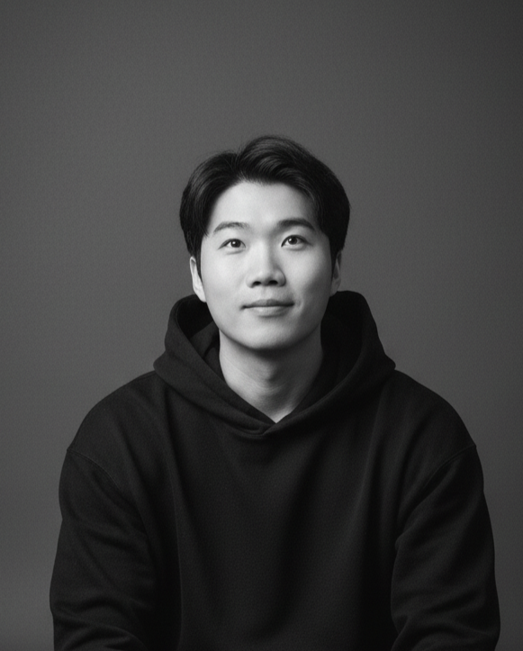
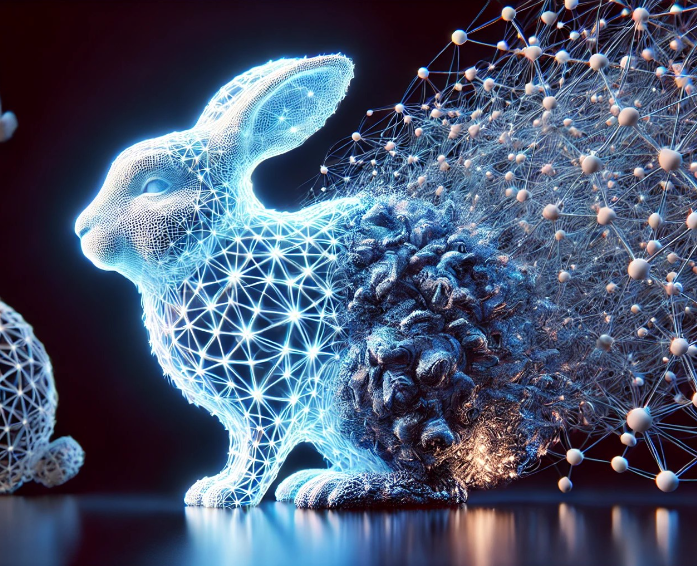
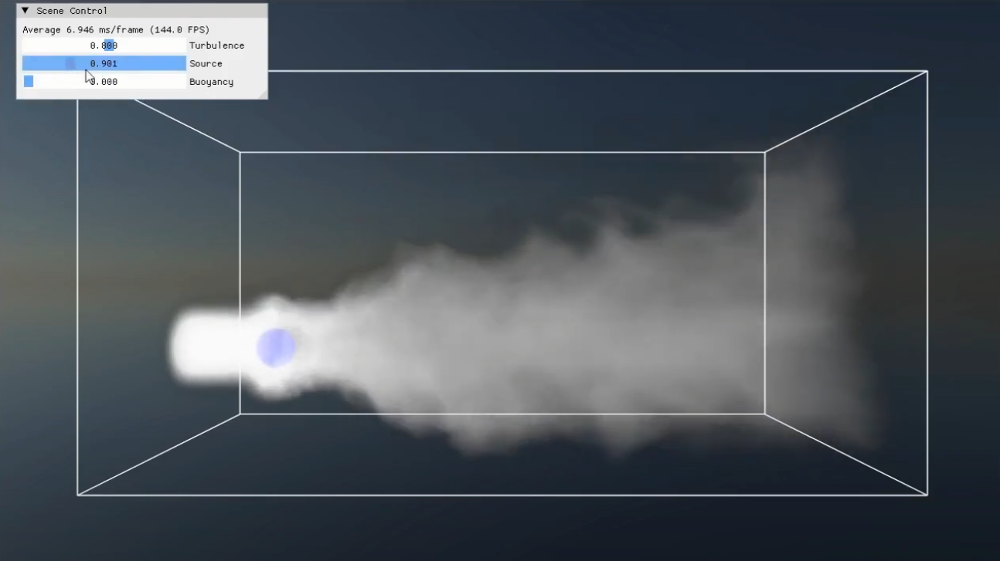
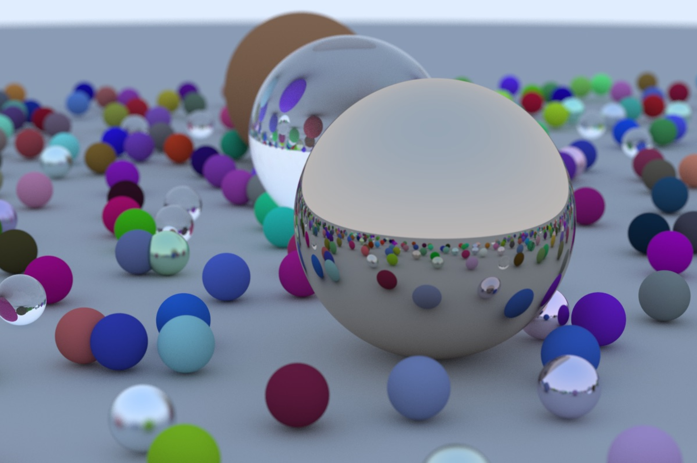

Multi-label Naive Bayes Classifier Considering Label Dependence
Pattern Recognition Letters · 2020

Curriculum VitaeI am a Research Engineer at Neowiz and received my M.S. from Chung-Ang University. My work centers on learning-based visual representations with an emphasis on physical structure and controllability.
I am interested in how neural models can be guided by physically meaningful priors such as geometry, materials, and intrinsic image structure to support reliable reconstruction, rendering, and editing of visual content. In practice, I care most about systems that survive real production workflows and remain useful to artists and downstream tools.
I work on learning-based inverse rendering, neural scene representations, and controllable 3D reconstruction and editing. Production work at Neowiz pushed me from purely metric-driven modeling toward systems that can be controlled, trusted, and integrated into real content pipelines.
My long-term interest is building visual AI systems that bridge research novelty and practical creative use, especially where geometry-aware structure and appearance consistency matter.
You can find my current CV, Google Scholar profile, GitHub repositories, LinkedIn profile, and direct email from the links below.
I am fascinated by graphics in a broad sense, from rendering and vision systems to analog drawing and stylized image making. That interest shows up both in production-facing research and in the artwork collected on the gallery page.
Pattern Recognition Letters · 2020

Multimedia Tools and Applications · 2018

Platform Technology and Service · 2019

Neowiz · Apr 2024 - Nov 2024
Designed a hair guide model generation pipeline for game hair production using geometry processing, clustering, importance sampling, and resampling.

Neowiz · Aug 2022 - Oct 2022
Designed and implemented an automated pipeline for facial animation generation using speech-to-viseme and script-based sentiment cues.

Neowiz · Jun 2021 - Oct 2022
Conducted GAN-based domain transfer to convert monster voices into mechanical sounds; applied in Lies of P.

Independent Project
Built a basic ray tracing engine implementing shading, reflection, and camera control following the Ray Tracing in One Weekend series.